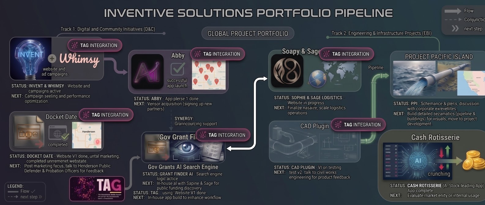

Scenery integrated · Logos in the wild · Fun summary vol 2
INVENTIVE SOLUTIONS
PORTFOLIO PIPELINE
Track 1 Digital & Community · Track 2 Engineering & Infra · TAG Central
Where we are now — scenery edition
No more clip-art logos. Every brand now lives in its world. 8 projects, 2 tracks, 1 brain (TAG). All roads still lead to TAG integration.
Overall pulse — updated statuses, fun but real
3 websites DONE (DocketDate, PPI, TAG v1). 2 in testing (Avi App, CAD Plugin). 3 in progress (S+S, Gov Grants AI, INVENT/Whimsy).
4 LIVE
Scenery shots in the wild
100%
TAG integrated across the board

Logos as places, not stickersWhimsy in a lightbulb terrariumAvi purple over vendor mapsDocketDate bronze in the courthouseSophie+Sage stamped on steel
Track 1 · Digital & Community · TAG integration everywhere
Track 1: INVENT + Whimsy x Avi
Website + ad campaigns wired together. Whimsy grows inside a cracked bulb terrarium. Avi glows as purple neon over live vendor maps.
 Whimsy & Weeds — greenhouse lab
Whimsy & Weeds — greenhouse lab Avi — neon ops center
Avi — neon ops center
INVENT + Whimsy — Live & seeding
Campaigns active · perf tuning in progress. INVENT tech bulb meets hand-crafted Whimsy growth. Site & ads bundled.
Next: seed look-alikes, split-test greenhouse visuals, 3x organic lift goal.
LiveWired to adsAd seeding →
Avi App — v1 launched ✓
24 vendors · 8 routes · live map. Successful app launch phase 1 done. Vendor acquisition sprint: onboarding 10 new partners this month.
Vendor map LIVE92% online
The power couple
Brain + beauty = revenue
INVENT scales the idea, Whimsy makes it human, Avi moves it. All feeding TAG signals.
Fun synergy
Track 2 · Engineering & Infrastructure · All TAG integrated
PPI + CAD Plug-in — building IRL stuff
Water line from Long Beach to Primm, Nevada — ocean intake, desert crossing, tanks on the basin. The CAD plug-in draws the hoopity-hoolah: alignments, vaults, pump stations, the whole civil stack.
 PPI — Long Beach → Primm, NV
PPI — Long Beach → Primm, NV
Website doneExec review
Project Pacific Island
Water line Long Beach → Primm, NV. Harbor intake, desert crossing, tanks on the basin. Visual corridor is live — in talks with corporate stakeholders.
- ROW + pump/tank footprints — stakeholder demo ready
- Corporate exec discussions — aligning on use-case priorities
Next step Build detailed use-case titles (capture & hold, long-term use), then move to full project development phase with engineering specs.
 CAD — civil stack on the ROW
CAD — civil stack on the ROW
V1 testingTAG integration
CAD Plug-in
V1 in testing — core automation working. Built for civil engineering workflows: drawing validation, layer checks, auto-tagging.
- Core engine passes 87% of test drawings
- Built for Civilworks + internal drafting team
Next step Talk to Civilworks engineering leads for product feedback, harden UX, then dogfood on PPI drawings.
Fun meter — drafting robots > manual clicks — fun when it actually works
Scenery integrated · Synergy mode
S+S Logistics + TAG + Gov Grants
Logistics ops meets the brain — Sophie + Sage stamps real steel containers while TAG & Gov Grant AI hunt money in the background.
 Sophie + Sage — container yard, drones up
Sophie + Sage — container yard, drones upSophie + Sage — in progress
Website in progress → gov grant tap. Ops platform building. Next: launch site, then let Gov Grant AI auto-match shipments to public funding windows.
In progress
TAG — workspace proxy
Own snap below. TAG is the layer that plugs every project into one workspace so the bots talk to each other instead of you sitting in another standup.
V1 donePrivate betaSee TAG →
Gov Grants AI search engine — WIP
Scraping public funding — synergy. In-house TAG testing. S+S → Grants loop: logistics jobs find grants automatically. Next: tune scoping.
In-house testTAG Ready
Cash Rotisserie — AI stock crunching
Market data roasting via TAG brain. Evaluating signals, backtest in progress. Next: evaluate monetize vs internal only.
Private beta · the glue for every project
TAG — kills meetings, not momentum
Stop forcing your brain onto somebody else's calendar. TAG is the asynchronous AI proxy that lives in the workspace, talks to every project in the pipeline, and keeps work moving while the standups melt.
 TAG · private beta
TAG · private beta
 Coordination is the leak
Coordination is the leak
31HCalendar Tetriswasted per week in meetings — a full-time job doing nothing
2–3DTimezone Taxlost per handoff while distributed teams wait for overlap
60%Status Theaterof meetings are updates, not decisions. Nothing ships.
What it actually is
An AI proxy that sits in the workspace and works on your schedule — not the calendar's. It integrates the rest of the pipeline so Avi, DocketDate, PPI, CAD, S+S, grants, and ETHR all talk through one brain instead of eight inboxes.
Website v1 done
Private beta
All-project hookup
Where it goes next
Dogfood it internally, then wire every live project as a TAG integration — one workspace, one proxy, no more calendar hostage situation.

Next step Internal daily use → v2 backlog from real friction → hook the rest of the portfolio in.
All roads lead to TAG integration
Portfolio at a glance — fun rebuild, real progress
Scenery integration done — logos now live in-world, not as clip-art stickers. 8 projects, all TAG-wired.
3 DONE
Websites live — TAG v1 · DocketDate · PPI visual site
2 TEST
In testing — Avi App v1 (24 vendors) · CAD Plugin v1 (87% pass)
3 WIP
In progress — S+S Logistics · Gov Grant AI · INVENT/Whimsy seeding
Project snapshots
- INVENT + Whimsy — ad campaigns seeding, greenhouse visuals
- Avi — vendor map LIVE, 10 new onboardings
- DocketDate — 97% compliance hub, Henderson PD feedback loop
- Gov Grant AI + S+S + Cash + TAG — brain stack synergy in progress
Next sprint — 6 moves
- Avi + INVENT/Whimsy rollout: seed ads with scenery bulbs, onboard 10 vendors
- DocketDate: run Henderson PD & Probation Officer UX test, close loop
- PPI exec alignment: lock use-case titles, move to dev specs
- CAD Plugin: Civilworks feedback session → harden v1
- S+S + Gov Grants: tune AI scoping, first auto-matched grant batch
- TAG dogfooding: use TAG daily for internal reporting, build v2 backlog
Rule going forward: no logo floats alone. If it can’t live in a photo-real scene, it doesn’t ship. Fun = real scale.
Building the future, one weird wonderful idea at a time — now with better lighting.